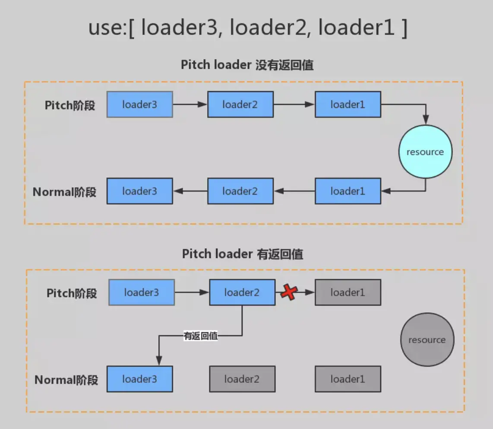

概述
webpack的loader本质上就是一个函数
1 | module.exports = function(content, sourcemap) { |
this 是 webpack 调用 loader 时候传入的自定义的特殊上下文，所以不应该使用箭头函数！
this.callback 可以传入四个参数（其中后两个参数可以省略），分别是：
- error ：当 loader 出错时向外抛出一个 Error 对象，成功则传入 null ；
- content ：经过 loader 编译后需要导出的内容，类型可以是为 String 或者 Buffer ；
- sourceMap ：为方便调试生成的编译后内容的 source map；
- ast : 本次编译生成的 AST 静态语法树，之后执行的 loader 可以直接使用这个 AST，可以省去重复生成 AST 的 过程。
loader 异步处理数据
第一种方式是是使用 async/await 异步函数写法
1 | module.exports = async function(content) { |
第二种方式是使用 this.async 方法获取一个异步的 callback ，然后返回它。
1 | module.exports = function(content) { |
this.async 获取的 callback，参数也是跟 this.callback 的参数一致，即 error，content，sourcemap 和 ast。
处理二进制数据
像 file-loader 这样的 Loader，实际处理的内容是二进制数据，那么就需要通过设置 moudle.exports.raw = true; 来告诉 Webpack 给 loader 传入二进制格式的数据。
1 | module.exports = function(source) { |
loader 的 pitch
loader 的执行分为两个阶段，pitch阶段loader从左到右链式调用。而Normal阶段是从右到左的链式调用。

在一些场景下，loader 并不依赖上一个 loader 的结果，而只关心原输入内容。这时候，要 拿到一开始的文件原内容，就需要使用 module.exports.pitch = function();
1 | module.exports.pitch = function(remainingRequest, precedingRequest, data) { |
pitch函数的data，在执行阶段也会暴露在 this.data 之下，并且可以用于在循环时，捕获和共享前面的信息。
loader 结果缓存
Webpack 增量编译机制会观察每次编译时的变更文件，在默认情况下，Webpack 会对 loader 的执行结果进行缓 存，这样能够大幅度提升构建速度，不过我们也可以手动关闭它：
1 | module.exports = function(content) { |
loader 工具库
loader-utils
loader-utils 提供了各种跟 loader 选项（options）相关的工具函数
1 | const { getOptions，stringifyRequest, parseQuery } = require('loader-utils'); |
schema-utils
schema-utils 是 loader 和 plugin 的参数认证器，检测传入的参数是否符合预期
1 | const validateOptions = require('schema-utils'); |
loader 上下文
loader 中 this 相关的其它方法和属性
- this.context : 当前处理转换的文件所在的目录；
- this.resource : 当前处理转换的文件完整请求路径，包括 querystring； this.resourcePath : 当前处理转换的文件的路径；
- this.resourceQuery : 当前处理文件的 querystring；
- this.target : Webpack 配置的 target；
- this.loadMoudle : 处理文件时，需要依赖其它文件的处理结果时，可以使用 this.loadMoudle(request: strin g, callback: function(err, source, sourceMap, module)) 去获取到依赖文件的处理结果；
- this.resolve : 获取指定文件的完整路径；
- this.addDependency : 为当前处理文件添加依赖文件，以便依赖文件发生变化时重新调用 Loader 转换该文件， this.addDependency(file: string) ；
- this.addContextDependency : 为当前处理文件添加依赖文件目录，以便依赖文件目录里文件发生变化时重新调 用 Loader 转换该文件， this.addContextDependency(dir: string) ；
- this.clearDependencies : 清除当前正在处理文件的所有依赖；
- this.emitFile : 输出一个文件，使用的方法为 this.emitFile(name: string, content: Buffer | string, so urceMap: {…}) ；
- this.emitError ：发送一个错误信息。
markdown-loader
1 | const showdown = require('showdown') // 第三方工具，把md转成html |